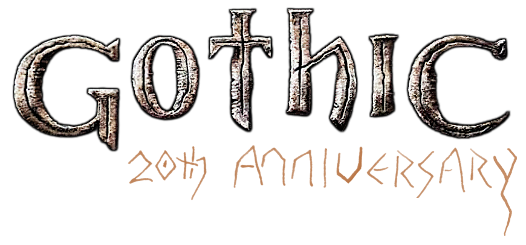
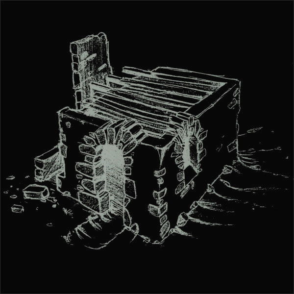
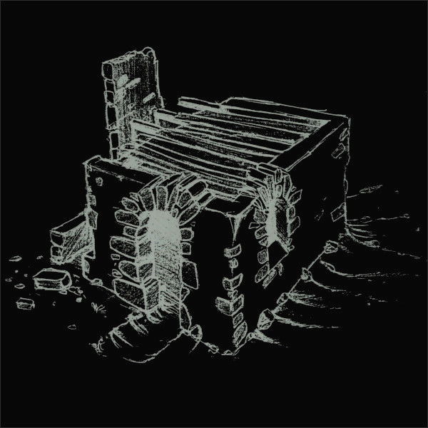

../
At the beginning of this year, I made a journey to Mike Hoge, the father of GOTHIC. It was an honour to talk to him about the old vision of the game that we present in this archive, in order to make the dream come true in project PHOENIX. He gave me his old design folders, such that I could digitise them for this event. You can read everything about this journey in my essay 'Phoenix & the Rescue of Design' (it was written in german, but already got translated into romanian too).
GOTHIC was released on march 15th 2001 in Germany and we celebrate the 20th anniversary of GOTHIC for 30 days starting today. Every day (or every other day) we try to release something that we have prepared and you can expect a lot of new things from Gothic's design process never seen before, published with the creators approval. We cannot promise that we will be able to show you everything that we want on time. There may be delays, but we do our best and everything will be fine.
Considering the documents, I have digitised them page by page and adjusted every page by hand. They were mostly unstructured. I have given them a new order and I have tried to do them justice in our presentation here. I think that the material that we are about to release is of historical value, at least it is most valuable to us and the Gothic Alpha Reboot we are working on. I want to thank Mike Hoge and Tom Putzki for the material and for their ongoing support.
May you enjoy our gifts. Happy birthday to GOTHIC. - flosha


 
